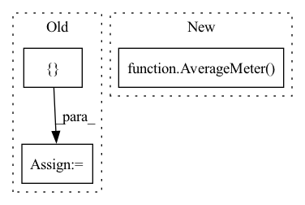

Pattern ID :20958
Before Change
if self.batch_index == 0:
self.metrics_meter = {k: AverageMeter() for k in metrics}
monitor = {}
for m_m in self.metrics_meter:
self.metrics_meter[m_m].update(metrics[m_m].cpu().detach().numpy(), data_loader.batch_size)
monitor[m_m] = self.metrics_meter[m_m].avg
if self.model_state == enums.ModelState.TRAIN:After Change
losses.update(loss.item() * self.config.gradient_accumulation_steps, data_loader.batch_size)
elif self._model_state == enums.ModelState.VALID:
if self.valid_batch_index == 0:
self.valid_meter = {k: AverageMeter() for k in metrics}
losses.update(loss.item(), data_loader.batch_size)
else:
raise ValueError("Invalid model state")In pattern: SUPERPATTERN
Frequency: 3
Non-data size: 3
Instances Fragment ID: 67539974
Project Name: abhi1thakur/tez
Commit Name: f1c2b3c582a5c0c298458bb76ec4a7a8ed01b420
Time: 2022-07-06
Author: abhishek4@gmail.com
File Name: tez/model/tez.py
M Class Name: Tez
N Class Name: Tez
M Method Name: _update_loss_metrics(5)
N Method Name: _update_loss_metrics(5)
M Parent Class:
N Parent Class:
M File Name: tez/model/tez.py
N File Name: tez/model/tez.py
M Start Line: 370
M End Line: 383
N Start Line: 414
N End Line: 431
Before Change
top1 = AverageMeter("Acc@1", ":6.2f")
top5 = AverageMeter("Acc@5", ":6.2f")
speed = AverageMeter("Speed", ":6.2f")
progress = ProgressMeter(
len(val_loader),
[ top1, top5, speed, batch_time, lossesAfter Change
batch_time = AverageMeter()
losses = AverageMeter()
top1 = AverageMeter()
top5 = AverageMeter()
// switch to evaluate mode
model.eval()
Fragment ID: 67539990
Project Name: richardkxu/distributed-pytorch
Commit Name: b5d0793a1bac4df6a31ab0dd1959baee4ab12809
Time: 2020-02-06
Author: richardkxu@gmail.com
File Name: imagenet_ddp_mixprec.py
M Class Name: AnonimousClass
N Class Name: AnonimousClass
M Method Name: validate(5)
N Method Name: validate(5)
M Parent Class:
N Parent Class:
M File Name: imagenet_ddp_mixprec.py
N File Name: imagenet_ddp_mixprec.py
M Start Line: 310
M End Line: 346
N Start Line: 292
N End Line: 331
Before Change
top1 = AverageMeter("Acc@1", ":6.2f")
top5 = AverageMeter("Acc@5", ":6.2f")
speed = AverageMeter("Speed", ":6.2f")
progress = ProgressMeter(
len(train_loader),
[ top1, top5, speed, batch_time, lossesAfter Change
batch_time = AverageMeter()
losses = AverageMeter()
top1 = AverageMeter()
top5 = AverageMeter()
// switch to train mode
model.train()
Fragment ID: 67539972
Project Name: richardkxu/distributed-pytorch
Commit Name: b5d0793a1bac4df6a31ab0dd1959baee4ab12809
Time: 2020-02-06
Author: richardkxu@gmail.com
File Name: imagenet_ddp_mixprec.py
M Class Name: AnonimousClass
N Class Name: AnonimousClass
M Method Name: train(7)
N Method Name: train(7)
M Parent Class:
N Parent Class:
M File Name: imagenet_ddp_mixprec.py
N File Name: imagenet_ddp_mixprec.py
M Start Line: 257
M End Line: 306
N Start Line: 237
N End Line: 288